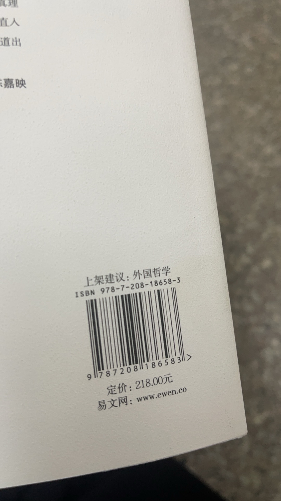

新年小记
放假起一直在学车；考完科目二，后天就动身去北方准备过年。
趁着年前先在北京玩了几天。各类景点，博物馆都去过，所以只逛了书店，买了一本很贵的书，其他时间都在酒店休息。最满意的是三联韬奋，中华书店，最糟糕的是可能有书。
我心目中的书店三要素：有书，有试阅，有安心之处；巧的是可能有书（店如其名）三者俱失，与其吸引读书者，倒更适合演员。
三联韬奋很朴实，各类书目俱全，老少咸宜，可以缩在角落看书不被打扰；中华书店颇受老人家青睐，店内大多是旧书，价格划算；书目排序比较随意，仔细些还是能淘到好货。

书店生意真是越来越难做，有次回小学时的住处，以前常去的书店关门了；下次再去，换成一家“教辅主题书店”。如今大人，年轻人都不读书，又如何能叫小孩爱书呢？今年我们在姥爷家过年。这里曾经有煤矿，村子曾因此辉煌一时，现在只剩矿坑，人走茶凉，建筑也如时间定格般，再没变过；好在邻里和睦，物价低廉，生活仍然自在。村庄的建筑整齐划一，要么都刷白腻子，要么都搭红砖墙。南方村子则多为马赛克瓷砖，房型各异，看起来乱乱的。
过年总避免不了要聚餐，只要没结婚没工作，依旧坐小孩那桌，和小朋友一起领压岁钱。北方的压岁钱比南方阔绰得多，收下来也不知道要用到哪去，便当作生活费，能支撑大半个学期。父亲教我给长辈敬酒，惭愧我嘴拙，几句吉祥话还没一桌人数多；酒量也不好，一小杯啤酒下肚就脸红头晕了。
比起聚餐我更喜欢呆在家里。姥爷姥姥做菜很好吃，从来不让我们帮忙；汆羊肉，羊肚包，红烧牛脊骨，基本上没有什么素食；牛羊都是村里养的，肉香浓郁，配上加满胡椒的羊汤，生啃几口大葱，怎么吃都不会腻。年三十当天还有元宝饺子，吃到元宝就有压岁钱拿；北方这边喜欢干吃饺子蘸酱，饺子会提前捞出水放凉，大家都吃得很过瘾。
用呆在家里的时间写了一个软光栅；上次是用c++ opengl写了硬光栅，尝试探索npr，写了各种outline算法，但tone shifting还没做好就弃了；这次用只用c，比较有趣的点：
1.用bitblt绘制视频缓冲；
2.结合qpc实现了高精度sleep；最后还是会浪费1ms的空转，没想好怎么改进；
3.绘制像素时做的是迭代器实现；这样就可以真的像写vertex shader一样写渲染函数。比较意外的是，iter没有比flat loop实现损耗更多性能，现代编译器的优化能力往往超乎我们想象。
最后成绩大概是70000面的斯坦福兔子渲染一帧4.4ms，感觉还不错
年后元宵节去陪了姑姑。姑姑现在退休住在海边，每天练书法，晚上去海滩散步。这几天晚上，海里居然有蓝眼泪，光芒比星星还微弱；细心寻找就会发现海浪里的微光。很美。姑姑做的菜也很好吃。似乎我是我们家唯一不会做菜的人。